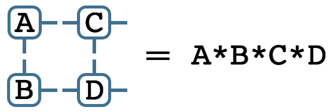
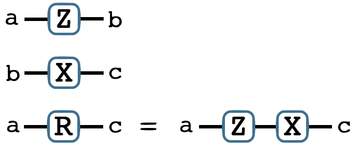

Introduction
ITensor—Intelligent Tensor—is a C++ library for implementing tensor product wavefunction calculations.
It is efficient and flexible enough to be used for research-grade simulations.
Features include:
- A complete DMRG code
- Quantum number conserving tensors
- Efficient matrix product state types
- Complex numbers (handled lazily: no efficiency loss if real)
Recent News
- Article: Should you use Periodic Boundary Conditions in DMRG?
- ITensor at 2014 Sherbrooke Summer School
- Parallelizing DMRG Across Real Space
- Studying DFT in a 1d Laboratory
ITensors are as easy to multiply as scalars: matching indices automatically contract, making it simple to transcribe tensor network diagrams into correct, efficient code.
For example, the diagram below can be converted to code as
Getting started with ITensor:
- Download the latest version.
- Read the installation instructions.
- Learn more from the documentation and tutorial.
Code Samples
Perform a DMRG Calculation
- SpinOne sites(100); //define Hilbert space of 100 spin-lattice sites
- MPO H = Heisenberg(sites); //pre-defined Hamiltonian; easy to write your own
- MPS psi(sites);
- Sweeps sweeps(5); //perform 5 sweeps of DMRG
- sweeps.maxm() = 50, 50, 100, 100, 200; //max number of states kept each sweep
- dmrg(psi,H,sweeps); //run the DMRG algorithm
- Real energy = psiHphi(psi,H,psi); //can analyze wavefunction *after* DMRG

Multiply Two ITensors
- Index a("a",2), b("b",2), c("c",2);
- ITensor Z(a,b), X(c,b);
- commaInit(Z,a,b) << 1, 0, 0,-1;
- commaInit(X,b,c) << 0, 1, 1, 0;
- //star '*' operator finds and
- //contracts common index 'b'
- //regardless of index order:
- ITensor R = Z * X;
- Print( R(a(1),c(2)) );
- //Prints: R(a(1),c(2)) = 1
- Print( R(a(2),c(1)) );
- //Prints: R(a(1),c(2)) = -1
ITensor Collaboration
| Steven R. White UC Irvine srwhite__uci.edu Homepage | Steve developed the original ITensor concept and implementation. | |
| E. Miles Stoudenmire Perimeter Institute emiles__pitp.ca Homepage | Miles has been ITensor's primary developer since 2010. |